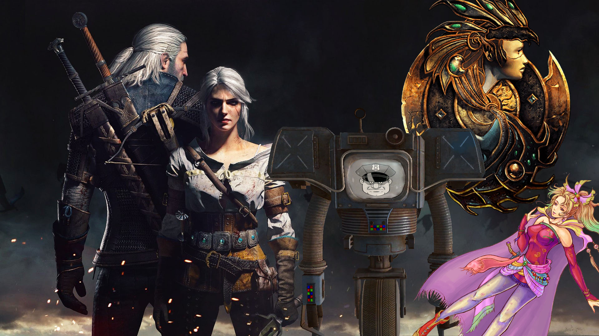
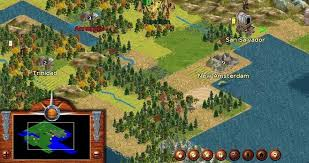

genero de el videojuego
- Accion
- aventura
- Deportes
- RPG
- Estrategia
Los Videojuego de Accion y aventura son una celebración de la narrativa, la exploración y la acción llena de adrenalina. Han sido los favoritos de los jugadores desde hace mucho tiempo porque no solo ofrecen jugabilidad, sino que también brindan una inmersión visual y mental total. Ya sea que estés desentrañando misterios antiguos o luchando contra enemigos míticos en un extenso mundo abierto, estos juegos te harán sentir como el héroe de una historia única. Lo que hace que el género sea tan atractivo es su variedad. Los juegos de acción y aventura ofrecen una mezcla de combates de alto riesgo y exploración estimulante que, según los jugadores, los hace volver.

Los Videojuegos de aventra son un género centrado en la narrativa, exploración, resolución de puzles e interacción con el entorno. Suelen enfocarse en una historia inmersiva, a menudo en primera o tercera persona, donde el protagonista supera obstáculos y peligros. Se destacan por su ritmo y variedad de situaciones, incluyendo la acción.

los videojuegos de deportivos pueden definirse como juegos de simulación que buscan brindar a los jugadores una sensación de participación en actividades deportivas del mundo real, como juegos de fútbol como FIFA y juegos de carreras como Gran Turismo. Estos juegos varían en realismo y pueden incorporar elementos arcade, ofreciendo diferentes niveles de representación de sus contrapartes del mundo real.

Los Videojuegos de RPG (Role-Playing Games) son un género donde el jugador controla a uno o varios personajes en un mundo detallado, enfocándose en la narrativa, la evolución de estadísticas y la toma de decisiones. Derivados de juegos de mesa, incluyen subgéneros como el JRPG (estilo japonés) y WRPG (occidental), destacando por su inmersión, combate (por turnos o acción) y rejugabilidad.
Los Videojuegos de estrategia son una manera de entretenimiento en donde se ponen a prueba diferentes habilidades de planificación, pensamiento crítico, resolución de problemas y gestión de recursos; con el fin de lograr un objetivo o conseguir la victoria para pasar a otro nivel.
Mira el video de videojuegos de estrategia mas jugados